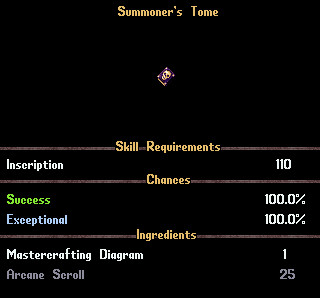
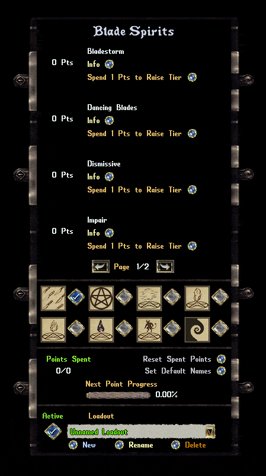
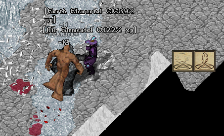
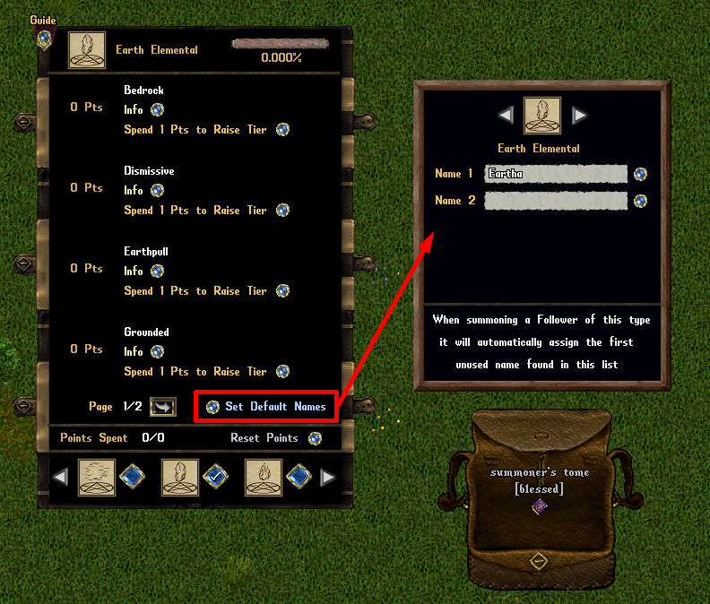
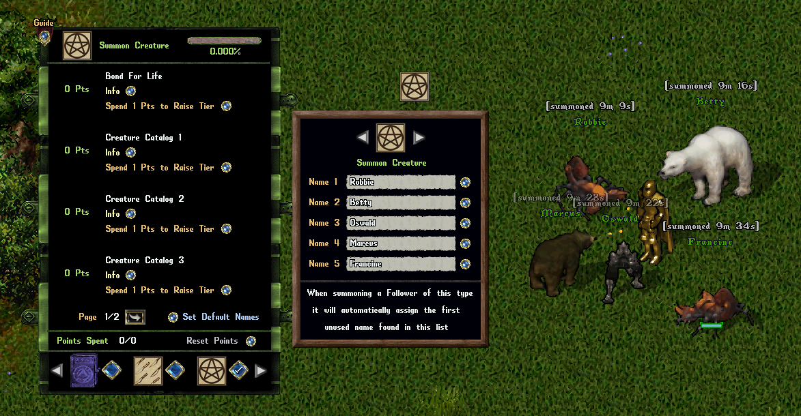
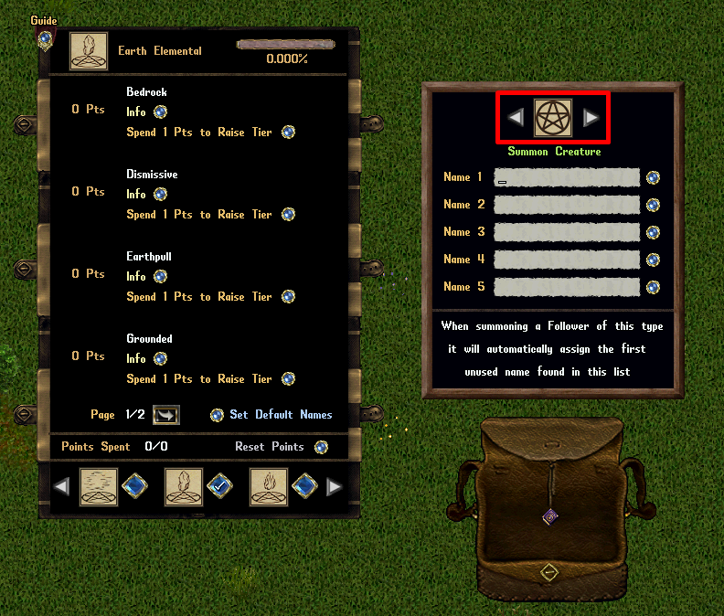

召唤之书（Summoner's Tome）是玩家用抄写（Inscription）制作的祝福（Blessed）工具书，专门用来强化 PvM 里的召唤物（Summons）。它和法师宝典（Wizard's Grimoire）、近战宝典（Dexer Codexes）同属「双击开菜单、进度绑角色」的一路货色。
硬门槛：要吃到召唤之书的任何收益，必须至少 80 魔法（Magery）+ 80 通灵（Spirit Speak）。技能不达标时打开书会收到提示，只能看档案，不能升级。


[ShowSummonersTomeExperience 里设置是否显示。
| 档位 Tier | 累计所需升级点 Cumulative Cost |
|---|---|
| Tier 1 | 1 点 |
| Tier 2 | 3 点 |
| Tier 3 | 5 点 |
下列 8 张表，每张对应一种召唤法术的 8 项升级。说明中的三档数值依次为 Tier 1 / Tier 2 / Tier 3。通用项「挥手即散 Dismissive」与「灵魂契约 Spirit Pact」在多数法术里重复出现，但回蓝量略有差异（风 / 土 / 火 / 水 / 能量漩涡为 8/24/40，剑灵与召唤生物为 3/9/15）。
| 升级 Upgrade | 说明 Description |
|---|---|
| 挥手即散 Dismissive | 随从被驱散或死亡时，玩家获得（8 / 24 / 40）魔法值（须在 18 格内）。 |
| 灵魂契约 Spirit Pact | 造成伤害提高（3% / 9% / 15%），伤害抗性提高（2% / 6% / 10%），法术施放时间缩短（0.5 / 1.5 / 2.5）秒。 |
| 旋风 Cyclone | 造成伤害提高（2% / 6% / 10%），近战攻击有（20% / 60% / 100%）几率使横扫（Cleave）半径 +1 并多命中 1 个目标。 |
| 疾风 Gale | 造成伤害提高（2% / 6% / 10%），命中率（Accuracy）提高（5% / 15% / 25%）。 |
| 阵风爆发 Microburst | 以横扫造成伤害后的 15 秒内，攻击速度提高（7% / 21% / 35%）（不叠加）。 |
| 风暴 Tempest | 近战攻击与横扫有（20% / 60% / 100%）几率无视目标护甲；若目标无护甲，造成伤害再提高（7% / 21% / 35%）。 |
| 风刃 Windshear | 近战攻击有（8% / 24% / 40%）几率造成（最大伤害 DamageMax × 1.0）的流血伤害，持续 15 秒。 |
| 旋风斩 Whirlwind | 横扫伤害提高（15% / 45% / 75%）。 |
| 升级 Upgrade | 说明 Description |
|---|---|
| 挥手即散 Dismissive | 随从被驱散或死亡时，玩家获得（3 / 9 / 15）魔法值（须在 18 格内）。 |
| 灵魂契约 Spirit Pact | 造成伤害提高（3% / 9% / 15%），伤害抗性提高（2% / 6% / 10%），法术施放时间缩短（0.5 / 1.5 / 2.5）秒。 |
| 削弱 Impair | 近战攻击有（5% / 15% / 25%）几率缠绕（Entangle）目标 6 秒；若目标已处于缠绕（Entangle）或定身（Hinder）状态，则改为造成（最大伤害 DamageMax ×（7% / 21% / 35%））伤害。 |
| 锯齿 Serration | 造成伤害提高（5% / 15% / 25%）；若目标身上有流血（Bleed）效果，加成再提高 50%。 |
| 剃刀 Razors | 近战攻击有（7% / 21% / 35%）几率造成（最大伤害 DamageMax × 1.0）的流血伤害，持续 15 秒。 |
| 精准切割 Precision Cuts | 命中率提高（4% / 12% / 20%）；若命中率已满 100%，改为近战伤害提高（5% / 15% / 25%）。 |
| 舞刃 Dancing Blades | 近战命中后，攻击速度累积提高（2% / 6% / 10%），持续 30 秒（最多 +6% / +18% / +30%）；一旦未命中，全部加成归零。 |
| 刃暴 Bladestorm | 近战攻击额外对 2 格内随机目标造成（最大伤害 DamageMax ×（12% / 36% / 60%））伤害。 |
| 升级 Upgrade | 说明 Description |
|---|---|
| 挥手即散 Dismissive | 随从被驱散或死亡时，玩家获得（8 / 24 / 40）魔法值（须在 18 格内）。 |
| 灵魂契约 Spirit Pact | 造成伤害提高（3% / 9% / 15%），伤害抗性提高（2% / 6% / 10%），法术施放时间缩短（0.5 / 1.5 / 2.5）秒。 |
| 血燃 Bloodfuel | 施法时有（5% / 15% / 25%）几率回复 1% 生命值；若在目标 2 格内，几率再提高 100%（即翻倍）。 |
| 战法师 Battlecaster | 造成伤害提高（4% / 12% / 20%）；若在目标 2 格内，加成再提高 100%。 |
| 复仇 Vengeance | 造成伤害提高（5% / 15% / 25%）；若过去 15 秒内被其他生物伤害过，加成再提高 100%。 |
| 嗜血 Bloodthirsty | 造成伤害提高（3% / 9% / 15%）；若目标生命值低于 66%，加成再提高 100%。 |
| 远古 Ancient | 每存活 30 秒，攻击速度与伤害抗性提高（1% / 3% / 5%）（上限 6% / 18% / 30%）。 |
| 怒意渐长 Growing Fury | 狂怒（Fury）能力可达到的最大伤害加成提高（10% / 30% / 50%），新的上限为（40% / 60% / 80%）。 |
| 升级 Upgrade | 说明 Description |
|---|---|
| 挥手即散 Dismissive | 随从被驱散或死亡时，玩家获得（8 / 24 / 40）魔法值（须在 18 格内）。 |
| 灵魂契约 Spirit Pact | 造成伤害提高（3% / 9% / 15%），伤害抗性提高（2% / 6% / 10%），法术施放时间缩短（0.5 / 1.5 / 2.5）秒。 |
| 重击 Slam | 造成伤害提高（4% / 12% / 20%），近战攻击有（7% / 21% / 35%）几率对目标施加 10% 的残废（Cripple）效果，持续 15 秒。 |
| 碎裂 Shatter | 近战攻击有（7% / 21% / 35%）几率对目标施加 25 点的穿刺（Pierce）效果，持续 15 秒；若目标无护甲，则改为造成（最大伤害 DamageMax ×（25% / 75% / 125%））伤害。 |
| 磐岩 Bedrock | 造成伤害提高（4% / 12% / 20%），伤害抗性提高（2% / 6% / 10%）；生命值低于 50% 时，加成提高 100%。 |
| 地引 Earthpull | 过去 5 秒内每有一只不同生物伤害该随从（最多计 3 只），造成伤害提高（2% / 6% / 10%）、伤害抗性提高（2% / 6% / 10%）。 |
| 扎根 Grounded | 生命值高于 66% 时，回复（1.5% / 4.5% / 7.5%）生命值（30 秒冷却）。 |
| 涤除杂质 Purge Impurities | 特殊抗性（Special Resistance）提高（8% / 24% / 40%）；生命值低于 66% 时，回复（1.5% / 4.5% / 7.5%）生命值（30 秒冷却）。 |
| 升级 Upgrade | 说明 Description |
|---|---|
| 挥手即散 Dismissive | 随从被驱散或死亡时，玩家获得（8 / 24 / 40）魔法值（须在 18 格内）。 |
| 灵魂契约 Spirit Pact | 造成伤害提高（3% / 9% / 15%），伤害抗性提高（2% / 6% / 10%），法术施放时间缩短（0.5 / 1.5 / 2.5）秒。 |
| 双子 Gemini | 造成伤害提高（4% / 12% / 20%）；若施法者操控的两只同类随从彼此在 12 格内，加成再提高 100%。 |
| 幽冥打击 Netherstrikes | 命中率提高（5% / 15% / 25%），近战攻击无视目标（15% / 45% / 75%）的护甲。 |
| 蓄势风暴 Gathering Storm | 过去 10 秒内每有一只不同生物伤害该随从（最多计 3 只），造成伤害提高（4% / 12% / 20%）、攻击速度提高（3% / 9% / 15%）。 |
| 联结 Nexus | 放电（Discharge）触发几率提高（5% / 15% / 25%），新几率为（15% / 25% / 35%）；但仇恨（aggro）提高正常的（20% / 60% / 100%）。 |
| 虚空跃迁 Voidshift | 放电（Discharge）能力触发后的 10 秒内，造成伤害提高（10% / 30% / 50%）、伤害抗性提高（5% / 15% / 25%）（不叠加）。 |
| 超载 Supercharged | 放电（Discharge）能力的治疗量与伤害提高正常的（20% / 60% / 100%）。 |
| 升级 Upgrade | 说明 Description |
|---|---|
| 挥手即散 Dismissive | 随从被驱散或死亡时，玩家获得（8 / 24 / 40）魔法值（须在 18 格内）。 |
| 灵魂契约 Spirit Pact | 造成伤害提高（3% / 9% / 15%），伤害抗性提高（2% / 6% / 10%），法术施放时间缩短（0.5 / 1.5 / 2.5）秒。 |
| 焦土 Scorched Earth | 法术伤害提高（4% / 12% / 20%）；施法时对目标施加（2 / 6 / 10）点的诅咒（Hex）效果，持续 15 秒。 |
| 野火 Wildfire | 施法时有（10% / 30% / 50%）几率对 2 格内随机目标造成（最大法术伤害 SpellDamageMax × 1.0）的无视护甲伤害。 |
| 煽风点火 Fanning The Flames | 史诗弹幕（Epic Barrage）伤害提高（10% / 30% / 50%），冷却缩短（0.5 / 1.5 / 2.5）秒。 |
| 玻璃大炮 Glass Cannon | 法术伤害提高（8% / 24% / 40%）；施法时有（0.5% / 1.5% / 2.5%）几率大幅提高仇恨，持续 10 秒。 |
| 不稳巫术 Unstable Sorcery | 法术伤害提高（8% / 24% / 40%）；施法时有（0.5% / 1.5% / 2.5%）几率使史诗弹幕的冷却延长 30 秒。 |
| 两头烧 Burning at Both Ends | 法术伤害提高（8% / 24% / 40%）；生命值高于 33% 时，每 15 秒损失（0.5% / 1.5% / 2.5%）生命值。 |
| 升级 Upgrade | 说明 Description |
|---|---|
| 挥手即散 Dismissive | 随从被驱散或死亡时，玩家获得（3 / 9 / 15）魔法值（须在 18 格内）。 |
| 灵魂契约 Spirit Pact | 造成伤害提高（3% / 9% / 15%），伤害抗性提高（2% / 6% / 10%），法术施放时间缩短（0.5 / 1.5 / 2.5）秒。 |
| 生死相随 Bond For Life | 随从死亡时，施法者回复（6 / 18 / 30）生命值，其余所有随从回复其最大生命值的（3% / 9% / 15%）（须在 18 格内）。 |
| 奔踏 Stampede | 造成伤害提高（7% / 21% / 35%）；若操控 4 只及以上随从，加成再提高 100%。 |
| 群体意识 Herd Mentality | 伤害抗性提高（5% / 15% / 25%）；若操控 4 只及以上随从，加成再提高 100%。 |
| 生物图鉴 1 Creature Catalog 1 | 提供（20% / 60% / 100%）几率使召唤生物池（Creature Pool）提升 1 个档位（可叠加）。 |
| 生物图鉴 2 Creature Catalog 2 | 提供（20% / 60% / 100%）几率使召唤生物池（Creature Pool）提升 1 个档位（可叠加）。 |
| 生物图鉴 3 Creature Catalog 3 | 提供（20% / 60% / 100%）几率使召唤生物池（Creature Pool）提升 1 个档位（可叠加）。 |
| 升级 Upgrade | 说明 Description |
|---|---|
| 挥手即散 Dismissive | 随从被驱散或死亡时，玩家获得（8 / 24 / 40）魔法值（须在 18 格内）。 |
| 灵魂契约 Spirit Pact | 造成伤害提高（3% / 9% / 15%），伤害抗性提高（2% / 6% / 10%），法术施放时间缩短（0.5 / 1.5 / 2.5）秒。 |
| 污浊 Polluted | 施法时有（4% / 12% / 20%）几率每 5 秒造成（最大伤害 DamageMax × 0.5）的疾病（Disease）伤害，持续 20 秒。 |
| 滞水 Stagnant | 施法时有（8% / 24% / 40%）几率施加剧毒（Greater Poison），并使目标的毒抗降低（8% / 24% / 40%），持续 15 秒（可叠加）。 |
| 映照之池 Reflecting Pool | 伤害抗性提高（2% / 6% / 10%）；镜像（Mirror）能力几率提高（10% / 30% / 50%），新几率为（25% / 45% / 65%）。 |
| 法术海妖 Spell Siren | 过去 5 秒内每有一只不同生物伤害该随从（最多计 3 只），造成伤害提高（2% / 6% / 10%）、伤害抗性提高（2% / 6% / 10%）。 |
| 深水 Deep Water | 生命值高于 66% 时，回复（1.5% / 4.5% / 7.5%）生命值（30 秒冷却）。 |
| 净化 Purification | 特殊抗性（Special Resistance）提高（8% / 24% / 40%）；生命值低于 66% 时，回复（1.5% / 4.5% / 7.5%）生命值（30 秒冷却）。 |


